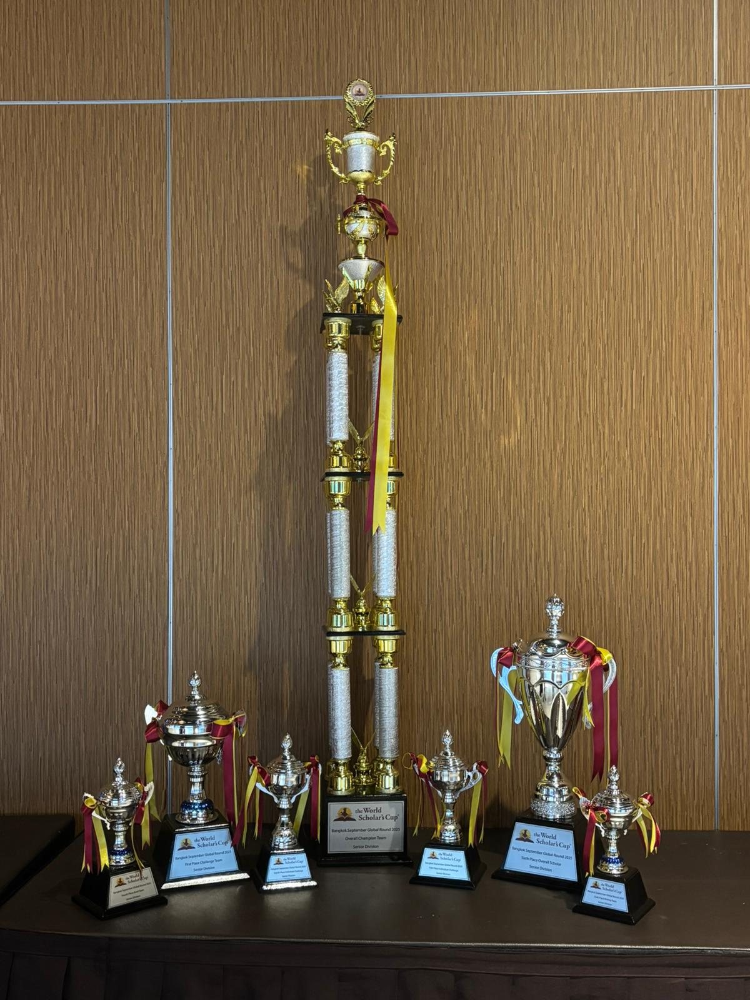
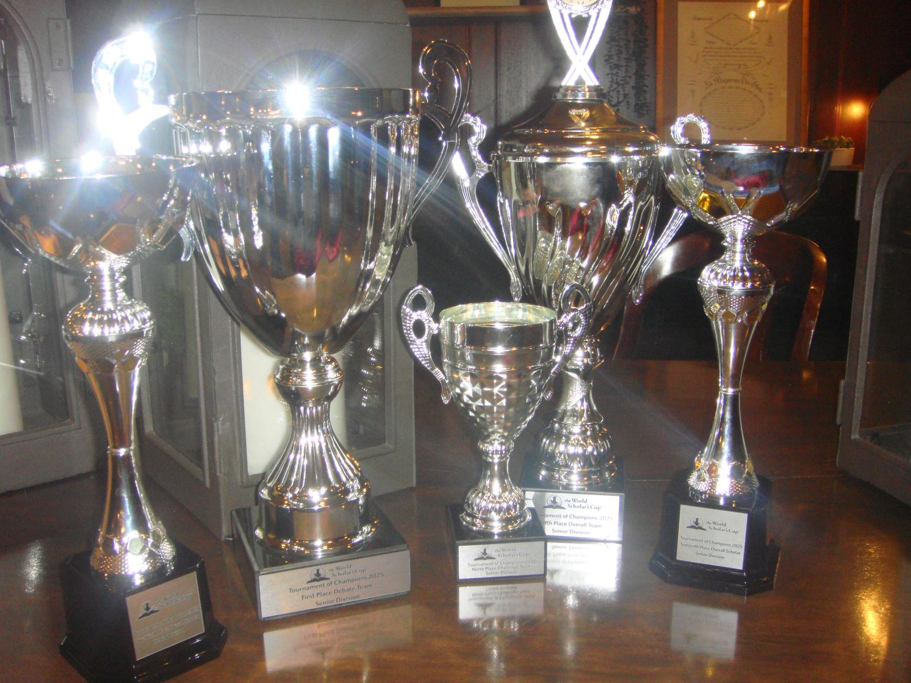

Debate, Writing, and Global Community

World Scholar's Cup is a competition for scholars to demonstrate their skills and connect with other students. It is one of the most fun extracurricular competitions available. You compete in a team of three to explore a specific theme that changes every year. The curriculum covers subjects ranging from Science and History to Literature and The Arts.
Access the key resources you need to succeed this season and stay connected with the team.
Master the art of WSC debate with our comprehensive team guide. It covers structure, strategy, and tips for high scores.
View Debate GuideExplore the 2026 Theme. These official guiding questions cover the curriculum for this year's syllabus across all subjects.
View SyllabusJoin the official CIS WSC Google Chat space. This is where we post announcements, find teammates, and coordinate meetings.
Join Group ChatEvery round features four competitive events that count toward your team's score.
You collaborate with your team to argue motions on global issues. You will debate three times per round.
You will be given six prompts. Each teammate picks one to write a persuasive essay on.
This is a multimedia team quiz. You race against the clock and other teams to solve analytical questions.
A multiple-choice exam where you can select multiple answers if you are not sure.
World Scholar's Cup is distinct because of its community. These events are designed to help you meet scholars from other schools and countries.
The top speakers from the round form new mixed teams. They debate a new motion in front of the entire community. Audience members can even volunteer to join the panel.
An optional talent (or untalent) show. Whether you are solving a Rubik's Cube with your feet or singing along to pop songs, this is a chance to perform for the community.
The following events take place only at the Global Rounds and the Tournament of Champions.
You are teamed up with 14 scholars from other countries. You undertake quirky challenges and explore a new city together, making friends from around the world.
A cultural fair where schools set up booths representing their countries. You can experience food, performances, and traditions from all over the world.
The rounds conclude with a dance. It is a chance to celebrate your hard work and socialize with the new friends you made during the Scavenge.
The CIS club is led by Mina, Zoe, and Radek. This team has a proven track record, having secured 1st Place Overall Team at both the 2025 Singapore Regional Round and the Bangkok Global Round against hundreds of other teams.

In previous years, the CIS school team has taken trips to Bangkok and New Haven to participate at Yale. We recently returned from the Tournament of Champions at Yale University with our best results yet. The team achieved 5th place overall in the world, and was crowned the 1st Place Debate Team at the championship.
After the upcoming Regional Round in May, qualifying CIS school teams get to travel around the world for global rounds. They also have a chance to compete in the Tournament of Champions on the Yale University campus.
We will be meeting every Monday SMART starting January 19th until May. Ms. Jancosko's room is in the level 4 English pod, KB417.
Join with friends this 2026 season to build your experience in debate and writing. You will get a chance to compete at Yale.